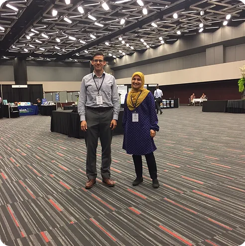
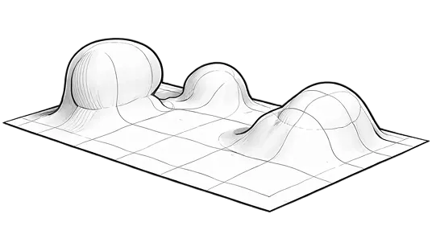
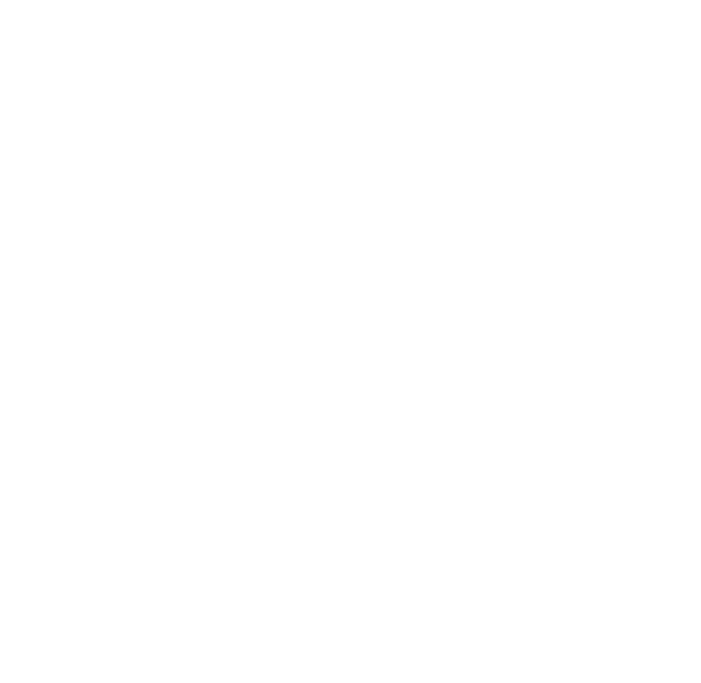
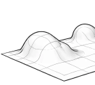
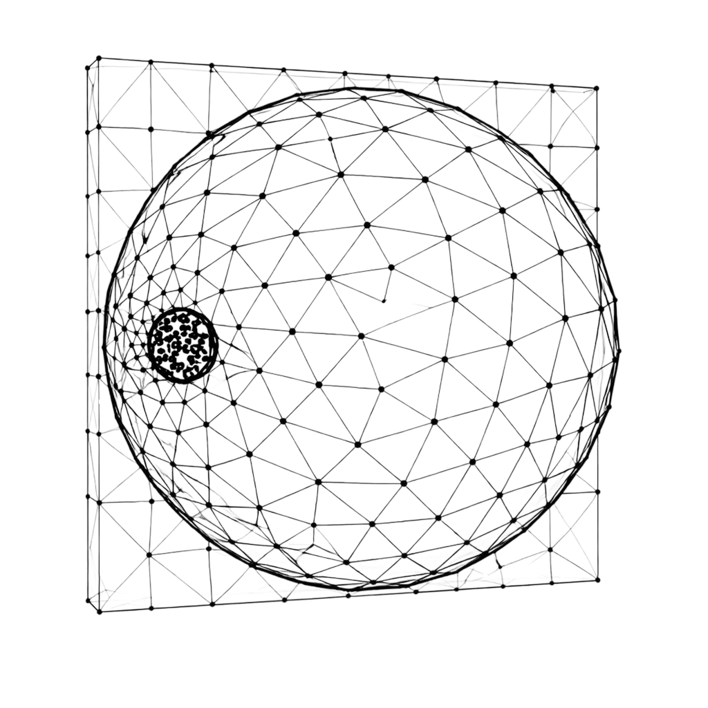
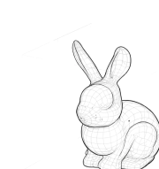
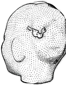
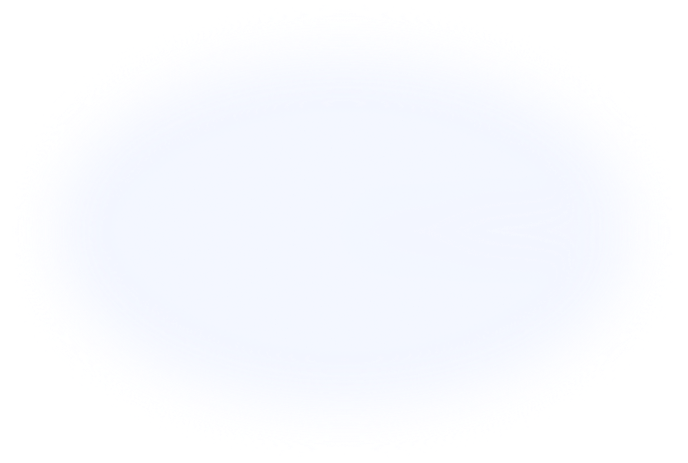

Get to know us
About Our Lab
The Tepole Lab is a research group within the Department of Mechanical Engineering at Columbia University. We study the mechanics of soft materials and biological tissues, focusing on how these systems respond to mechanical forces, evolve over time, and adapt through growth, remodeling, failure and healing.
Our work lies at the intersection of solid mechanics, biomechanics, and computational modeling. By integrating theoretical frameworks, numerical methods, and experimental data, we aim to develop predictive models that connect fundamental mechanics with real-world biological and engineering applications.
What We Study
Research focus
Our research explores the mechanical behavior of soft and biological materials across multiple spatial and temporal scales. We are particularly interested in systems where mechanics, biology, and geometry are strongly coupled.
Skin mechanobiology
Modeling tissue growth and adaptation under mechanical loading, with applications in reconstructive surgery.

Breast Cancer Biomechanics
Computational and theoretical study of skin regeneration, focusing on multiscale interactions and mechanical feedback.

SciML: Solid Mechanics
Patient-specific modeling of tissue response to improve outcomes in reconstructive surgical procedures.

Digital Twins for Biomedical Systems
Development of advanced numerical and finite element methods for soft and biological materials.


Opportunities
Graduate Student Opportunities
Prospective MS and PhD students interested in working with the Tepole Lab are welcome to apply. Current MS students at Columbia University may contact Professor Tepole directly. Applicants to graduate programs should apply through the Mechanical Engineering website and indicate their interest in working with Professor Buganza Tepole in their application.
Undergraduate Research Opportunities
We regularly welcome motivated undergraduate students seeking hands-on research experience. Undergraduate researchers contribute to ongoing projects and gain exposure to computational modeling, biomechanics, and research methodologies. Interested students should contact Professor Tepole for more information.
Interdisciplinary and Non-Engineering Students Opportunities
The Tepole Lab welcomes undergraduate students from non-engineering backgrounds who are interested in science communication, design, and creative exploration. We are especially excited to collaborate with students who want to translate our research into illustrations, interactive experiences, games, or other creative formats that help bring complex scientific ideas to a broader audience.
Visiting Scholar Opportunities
The Tepole Lab regularly hosts exchange students from around the world, welcoming participants from international academic partnerships such as the Columbia Alliance Program. These exchanges enrich the lab’s research environment by fostering collaboration, cultural diversity, and the sharing of ideas across institutions.
Interested in joining the Tepole Lab?
If you are interested in contributing to our research, we encourage you to explore our work and reach out with your academic interests and background. We welcome inquiries from students and researchers at different stages of their careers.

Follow Us
Youtube